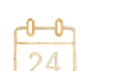
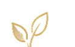

Daily stuff. One day at a time.
Today’s Reading
Opening today’s reading…
Open Today
On AwakeningStart the day with intention.
Open

Twenty-Four Hours a DayA thought for today. Open
Daily ReflectionsExperience, strength and hope. Open Another Day SoberDaily step study. OpenBig BookThe foundation. Always here. Open
Chapters & forewords
Preface
Foreword — First Edition
Foreword — Fourth Edition
The Doctor’s Opinion
Ch 1 — Bill’s Story
Ch 2 — There Is a Solution
Ch 3 — More About Alcoholism
Ch 4 — We Agnostics
Ch 5 — How It Works
Ch 6 — Into Action
Ch 7 — Working With Others
Ch 8 — To Wives
Ch 9 — The Family Afterward
Ch 10 — To Employers
Ch 11 — A Vision For You